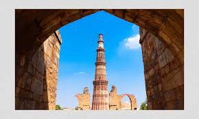

TajMahal
The Taj Mahal is an ivory-white marble mausoleum on the right bank of the river Yamuna in Agra, Uttar Pradesh, India. It was commissioned in 1631 by the fifth Mughal emperor, Shah Jahan to house the tomb of his beloved wife, Mumtaz Mahal; it also houses the tomb of Shah Jahan himself.

Qutb Minar
The Qutb Minar, also spelled Qutub Minar and Qutab Minar, is a minaret and "victory tower" that forms part of the Qutb complex, which lies at the site of Delhi’s oldest fortified city, Lal Kot, founded by the Tomar Rajputs. It is a UNESCO World Heritage Site in the Mehrauli area of South Delhi, India. It is one of the most visited tourist spots in the city, mostly built between 1199 and 1220.
.jpg)
Hawa Mahal
The Hawa Mahal is a palace in the city of Jaipur, India. Built from red and pink sandstone, it is on the edge of the City Palace, Jaipur, and extends to the Zenana, or women's chambers. The structure was built in 1799 by the Maharaja Sawai Pratap Singh, grandson of Maharaja Sawai Jai Singh, the founder of the city of Jhunjhunu in the state of Rajasthan.